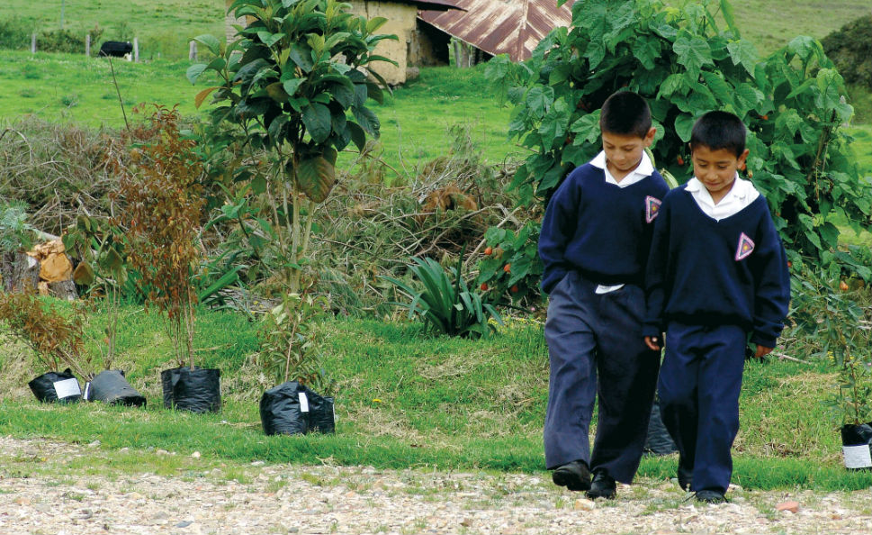

Montería como lugar crítico en la lucha por la tierra
La ciudad de Montería y sus alrededores son un buen ejemplo de espacio urbano que interactúa con el espacio rural y que es escenario del abandono del estado. Esta zona tuvo fuerte impacto por la presencia de grupos paramilitares en el siglo 20, y las luchas que ha vivido la gente que habita allí han determinado cómo se construye el territorio.
Este mapa refleja puntos que fueron determinantes en la lucha del poder colectivo con el económico, de la que hizo parte la lideresa Yolanda Izquierdo en Córdoba. Haz clic en el ícono superior izquierdo para ver el detalle de los puntos marcados
Actores importantes
La vida en comunidad en esta región se ha visto influenciada por tres actores, principalmente
Paramilitarismo: Este grupo armado tuvo una alta presencia en la región de Córdoba. La creación de las Autodefensas Unidas de Colombia en Córdoba y el Urabá tuvo origen por la lucha contra las guerrillas que estaban en la zona
Autoridades: Estas entidades, usualmente vinculadas al estado, prometen una protección para los ciudadanos colombianos. Sin embargo, en muchas ocasiones resulta en negligencia y complicaciones por procesos y no cumplen con su labor
Comunidades: Los civiles de esta región viven situaciones complicadas, puesto que su calidad de vida no se garantiza. La colectividad se ve reflejada en los líderes como Yolanda Izquierdo, que viven por y para su pueblo
Construccion colectiva
Las necesidades de la comunidad no las conoce nadie más que la comunidad misma. El estado no da garantías a la gente, lo que los lleva a actuar por sí mismos: crear escuelas comunitarias, redes de hogares del Bienestar familiar son algunos ejemplos de las iniciativas del pueblo. También se vio en la ciudad de Montería una particularidad en la que campesinos pobres invadían fincas abandonadas y se adaptaban a estas condiciones para vivir. La lideresa Yolanda Izquierdo hizo parte de todo lo anterior.
